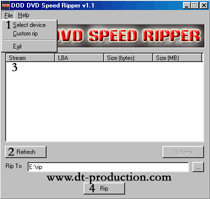
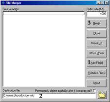
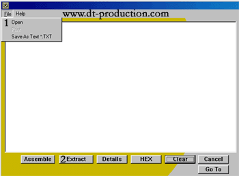
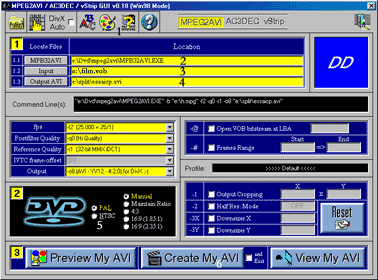
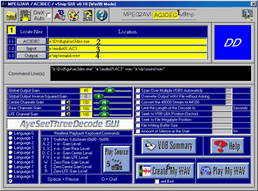
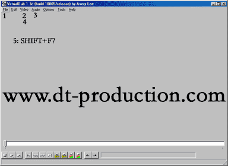
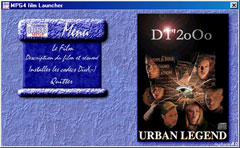

DVD RIP
Il est aujourd'hui possible, grace au MPEG-4, de ripper un DVD sur 1 seul cd, et cela en tres bonne qualite . Avertissement, ce tutorial s'adresse aux utilisateurs confirmes, sachez que je ne repondrai pas a un mail du genre "je n'arrive pas a passer cette etape", "ca marche pas", ou autres, je vous conseille de vous lancer dans de telles opérations que si vous vous connaissez un minimum en informatique.
Je vous rappelle qu'il vous faut quand meme une bonne machine pour esperer compresser, et lire le mpeg4. De plus, on ne peut lire du MPEG4 avec un lecteur de salon.
Je vais vous proposer une methode qui n'est peut-etre pas la plus rapide, la mieux, mais qui au moins marche sans trop de probleme, par rapport a d'autres...
Tout d'abord, vous aurez besoin de ces logiciels :
N.B. Pour faciliter l'utilisation de Mpeg2avi et Ac3dec, je vous propose un programme sous windows (Interface GUI) qui controle ces 2 logiciels. (donc il vous faudra toujours Mpeg2avi et Ac3dec)
Autre precision : cette methode, ainsi que les logiciels, marchent egalement sous Win2oOo.
Je vous signale qu'il est beaucoup plus facile de riper un DVD Pal que NTSC, donc commencez par du PAL si possible !
|
1°) Rip du DVD au format
VOB. |
|
Comme vous pouvez le constater,
les fichiers videos du DVD (repertoire VIDEO_TS) sont deja au format VOB.
Le seul probleme est que certains DVD sont proteges, c'est pourquoi nous
allons utiliser DODSrip (qui est maintenant en version Windows, plus sous
DOS). Remarque : le rip est possible avec DCSS, mais j'ai quelques
problemes avec ce logiciel...
Il vous faut maintenant reperer
les fichiers du DVD contenant le film. Pour cela, allez dans le repertoire
VIDEO_TS du DVD, et cherchez des fichiers .VOB de 1Go. Le film sera
contenu sur tous les fichiers VOB de 1Go, dans l'ordre numerique des
fichiers, plus, generalement, le fichier suivant de 1mo a 1Go, qui
contient la fin du film. Vous pourrez de toutes facons visualiser vos
fichiers VOB ripes avec votre logiciel DVD prefere , par la suite...
|
 |
Vous voila dans
DODSrip...
Si, au demarrage, le logiciel vous dis que vous n'avez
pas de lecteur, c'est normal, cliquez sur abort!
Donc, suivez la
capture d'ecran:
1. Cliquez sur Select
Device pour choisir votre lecteur DVD.
2. Cliquez sur Refresh,
une liste de fichiers VOB devrait apparaitre.
3. Choisissez les
fichiers vob que vous voulez ripper, ainsi que le dossier dans
lequel vous voulez mettre ces fichiers. (case où il est marque
e:\rip)
4. Cliquez sur Rip, et attendez la fin de l'operation.
(environ 1 heure selon votre materiel et la duree du
film) | Si vous riper avec Decss, pensez
a cocher la case merge, qui va creer un unique fichier, contenant tous les
VOB selectionnes...
Pensez quand meme a la limite FAT32
de Win98: vous ne pouvez pas avoir de fichiers de plus de 4 Go. Si vous
etes en partition NTFS (ex Win2oOo), pas de
probleme ! |
|
2°) Rassembler les
VOB. |
|
Deja, je vous conseille de
verifier que vous avez bien tous les fichiers VOB, et que ce sont bien les
bons. (verif avec un logiciel de lecture DVD, tout simplement)
Ensuite,
nous allons nous servir du logiciel VobMerge
|
 |
Vous arrivez dans File
Merger.
1. Cliquez sur ADD Files,
puis choisissez les fichiers VOB que vous voulez
assembler.
Vérifiez bien l'ordre des fichiers dans le cadre, pour
ne pas avoir la fin du film au debut etc... De toutes facons
verifiez toujours votre resultat ensuite...
2. Choisissez le
fichier de destination, du type film.vob
3. Cliquez sur
Merge.
Vous aurez ensuite un
gros fichier... (Pensez à la remarque FAT32) | |
|
3°) Sortir le son du
VOB. |
|
Lors de la compression, le
logiciel ne s'occupe que de la vidéo, c'est pourquoi il faut utiliser
VobSnoopy pour extraire le son de la langue qui vous interesse.
|
 |
Lancez VobSnoopy.
Si
vous avez un probleme au lancement, ce n'est rien, allez dans le
repertoire où vous l'avez installe (par défaut c:\CDMOTION), editez
le fichier CDMOTION.ini, et a cote de tempdir= et template= , tapez
un nom de repertoire valide (du type c:\windows\temp)
1. Cliquez sur Open,
choisissez votre fichier VOB.
2. Cliquez sur Extract. Choisissez
la premiere case (Audio decode), de la nouvelle fenetre.
3.
Choisissez les noms de fichiers.
4. Attendez. Vous aurez autant
de fichiers don qu'il y a de langues differentes sur le
DVD.
| Vérifiez qu'il y ait le bon nombre de
fichiers! |
|
4°) Compresser la
video. |
|
Installez avant les codecs
DIVX.
|
 |
Lancez l'interface
GUI.
1. Choisissez votre
Windows (98 ou 2000). Le nom est parqué en haut.
2. Indiquez ou
MPEG2avi se trouve. (selectionnez le sur votre disque dur)
3.
Choisissez votre fichier VOB à compresser.
4. Choisissez le
fichier de destination. (compress.avi par exemple)
5.
Choisissez le format de votre DVD (PAL ou NTSC). Vous devez
egalement choisir le mode d'affichage . Je vous conseille 16/9, apres
a vous de choisir entre 1.85.1 ou 2.35.1, en sachant que l'image est
mieux proportionnee en 2.35, mais qu'elle est legerement rognee.
(mais la video prendra moins de place). Le mieux est de choisir et
de faire Preview My AVI pour se rendre compte. (pour quitter le
preview, allez dans la fenetre dos et tapez q)
6. Cliquez sur
create my AVI.
Une fenetre va apparaitre, demandant la methode de
compression, choisissez DivX ;-) fast compression, cliquez sur
proprietes et choisissez le framerate. (plus il est eleve , mieux est
la qualite, mais plus ca prend de place... Je vous conseille de
prendre 1000 en 16/9 2.35.1...
Maintenant patientez
quelques heures (moi je fait ca la nuit, il faut juste
attendre...)
| Une fois l'operation terminee, verifiez
votre compress.avi! |
|
5°) Compresser le
son. |
|
|
 |
Lancez l'interface
GUI.
1. Choisissez votre
AC3DEC en haut.
2. Indiquez ou AC3dec se trouve. (selectionnez le
sur votre disque dur)
3. Choisissez votre fichier ac3 à
compresser en wav.
4. Choisissez le fichier de destination.
(sound.wav par exemple)
5. Cliquez sur Play Source, pour
entendre le fichier de depart, et ainsi choisir le fichier
correspondant a la langue desiree. (si le film est americain, c'est
souvent le deuxieme fichier (audio01.ac3)
6. Une fois le fichier
trouve, faites quelques reglages dans la partie milieu-gauche
(40,0,100,100,100), puis cliquez sur create my wav.
Une fenetre
va s'ouvrir, choisissez MPEG-Layer 3, puis proprietes, et choisissez
96kbs kbits/s, 48,000 hz, Stereo, 12ko/s. (ca ne prend pas trop de
place et le son est bon).
La compression dure
environ 2h pour un film de 1h30.
| Une fois l'operation terminee, verifiez
votre sound.wav! |
|
6°)
Multiplexer. |
|
Multiplexer consiste à
assembler le son et la video. C'est l'opération finale.
|
 |
Lancez Virtual
Dub
1. Cliquez sur file
--> Open Video File, choisissez votre fichier video.
(compress.avi)
2. Cliquez sur Video, selectionnez Direct Stream
Copy.
3. Cliquez sur Audio 3 fois, en choisissant Full Processing
Mode, Wav audio (choississez votre sound.wav, puis Compression.
(choisissez Mpeg Layer-3 et 96 kbits/s en 48,000 Hz)
4.
(uniquement si vous avez encode du NTSC) N.B.
NTST ou PAL est marque sur la boite du DVD. Cliquez sur VIdeo
--> Frame Rate Change to 23.977.
5. Cliquez dur File -->
Save extended AVI. Si ca ne marche pas, faites SHIFT+F7
Voila! L'operation dure
environ 2 heures, et votre DVD est enfin ripe!!!
| Bravo si vous avez reussi, vous pouvez
maintenant lire votre CDVideo! |
|
En Plus:
Autorun. |
|
Voilà un systeme d'autorun,
c'est a dire que le cd va se lancer automatiquement en ouvrant un menu en
français, dans lequel vous pourrez mettre un resume, une image, et un
systeme d'installation pour lire le cd (plugins MPEG4)
|
 |
Deja , telechargez le
logiciel ICI.
Ensuite, pour l'utiliser, il faut copier
ces fichiers a la racine du CD. Vous aurez donc autorun.exe et .ini
dans aucun repertoire et un repertoire Autorun.
1. L'image du
film. Dans le repertoire Autorun, remplacez l'image imgfilm par la
votre qui doit avoir le meme nom. Les dimensions de cette image
doivent etre: 200 x 281.
2. Le resume. Pour le changer, il faut
ouvrir le fichier description.txt du repertoire Autorun, et le
changer.
3. Le Plugin. Il faut telecharger le plugin DivX ;-) que vous devez deja avoir, puis
renommer le fichier divx(...).exe contenu dans le zip en divx.exe et
le placer dans le dossier Autorun.
4. Le lancement du film. Pour
pouvoir lancer le film depuis l'autorun, vous devez deja ouvrir le
fichier titre.txt du repertoire Autorun, et mettre le nom de film
que vous voulez (ex: urban.avi). Ce fichier avi devra etre place a
la racine du CD. | Voila! Vous avez
maintenant un cd
complet! |
Dobermann
|